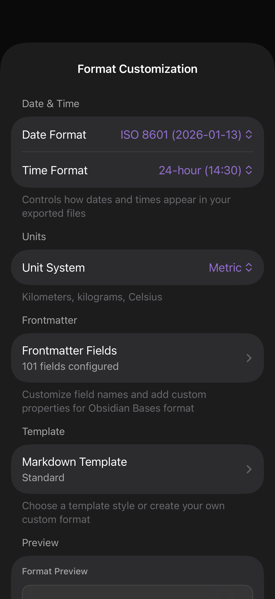

Format Customization
Control output formatting without changing what's collected. Pick a file format, date / time / unit conventions, customize the YAML frontmatter, and choose a Markdown template.

Output formats
Date & time
Pickers for date format (e.g. YYYY-MM-DD, MMM d, yyyy) and time format (12-hour, 24-hour). The preview block at the bottom of the screen updates live as you change settings.
Unit system
Toggle between Metric and Imperial. Affects distance (m/km vs ft/mi), weight (kg vs lb), temperature (°C vs °F), and a few others. HealthKit always stores in canonical units; conversion happens at export time.
Frontmatter fields
Tapping Frontmatter Fields opens a dedicated editor:
- Toggle individual built-in fields (date, weekday, totalSteps, etc.)
- Rename a field — useful if your Obsidian setup expects different keys
- Add custom fields with static values (e.g.
type: health) - Add placeholder fields that resolve at export time (e.g.
weather: {weather})
Markdown template
Tapping Markdown Template opens a template editor with several built-in styles (Compact, Sections, Detailed) plus a fully custom mode. The preview block shows the result for today's data.
Preview
At the bottom of the Format screen, a live preview block renders today's data with your current settings. This is the fastest way to iterate — change a toggle, look at the preview, repeat.